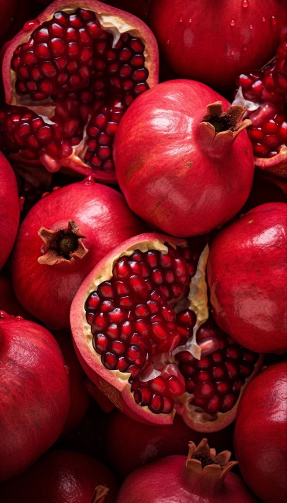

Pomegranate Cultivation Guide

1. Climate & Soil
Grows well in semi-arid to arid climates.
Thrives in well-drained loamy or sandy loam soil with pH 6.5–7.5.
2. Land Preparation & Planting
Deep plow and level the field.
Dig pits 60x60x60 cm, spaced 5m x 5m (approx. 175–200 plants/acre).
Plant during June–July or February–March.
3. Irrigation
Water every 7–10 days in summer and reduce during winter.
Drip irrigation is highly effective for this crop.
4. Fertilizer Management
FYM: 10–20 kg per plant/year.
NPK (per plant/year): 500g N, 200g P, 200g K split over the growing season.
Micronutrients: Zinc, Boron foliar sprays during fruiting.
5. Pest & Disease Control
Pests:
Fruit borer, aphids, mealybugs — controlled with insecticides and neem extract.
Diseases:
Fruit rot, wilt — managed with proper sanitation and fungicides.
6. Investment Breakdown (Per Acre)
Input
Estimated Cost (INR)
Planting Material
₹8,000 – ₹12,000
Fertilizers & Micronutrients
₹5,000 – ₹7,000
Pesticides & Fungicides
₹3,000 – ₹5,000
Labor & Irrigation Setup
₹10,000 – ₹15,000
Total Investment
₹26,000 – ₹39,000 per acre
7. Yield & Harvesting
First yield starts in 2–3 years; peak yield from 4th year onward.
Average yield: 8–12 tons/acre annually (mature plants).
8. Market Rate & Profit Estimation
Market price: ₹40 – ₹80 per kg depending on season and quality.
Gross income: ₹3,20,000 – ₹9,60,000 per acre.
Net profit: ₹2,50,000 – ₹9,00,000 per acre.